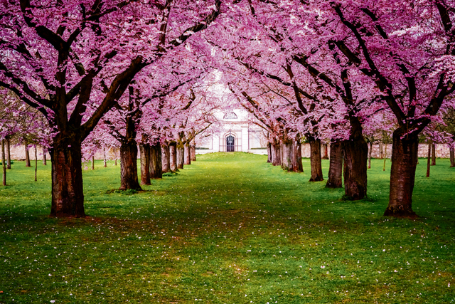
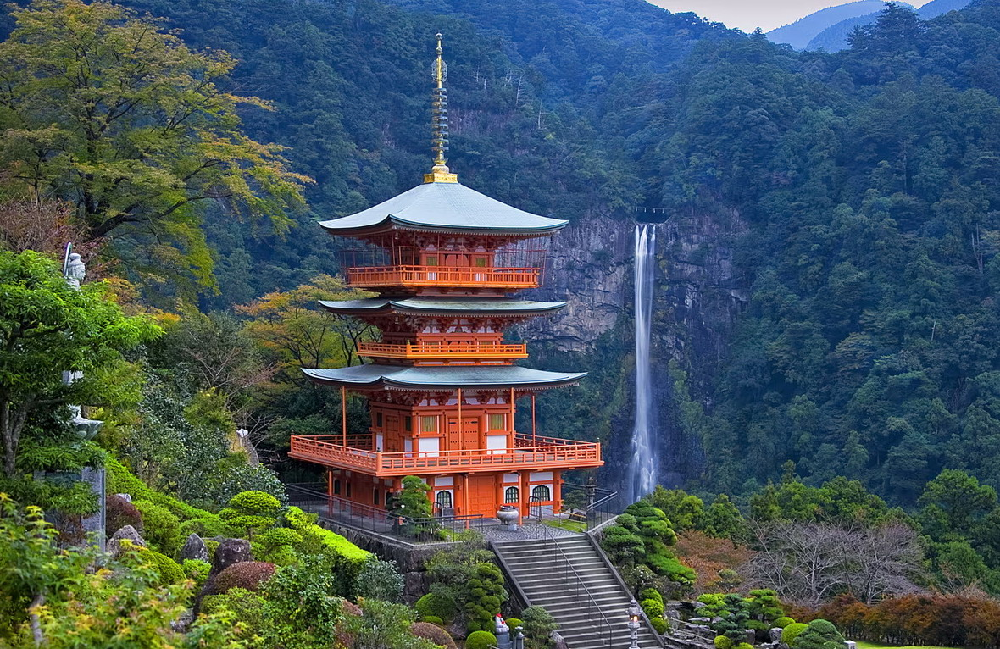
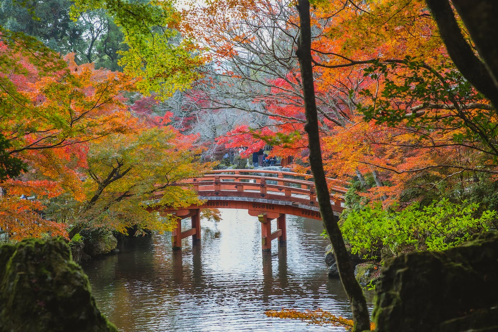
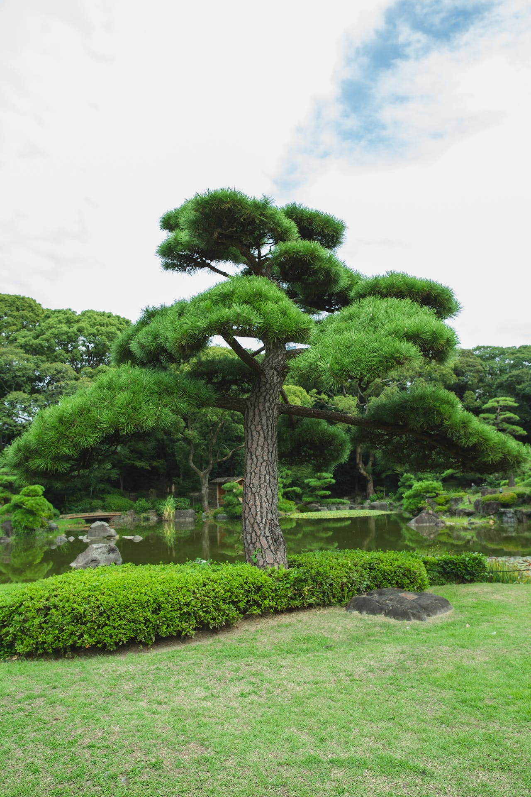
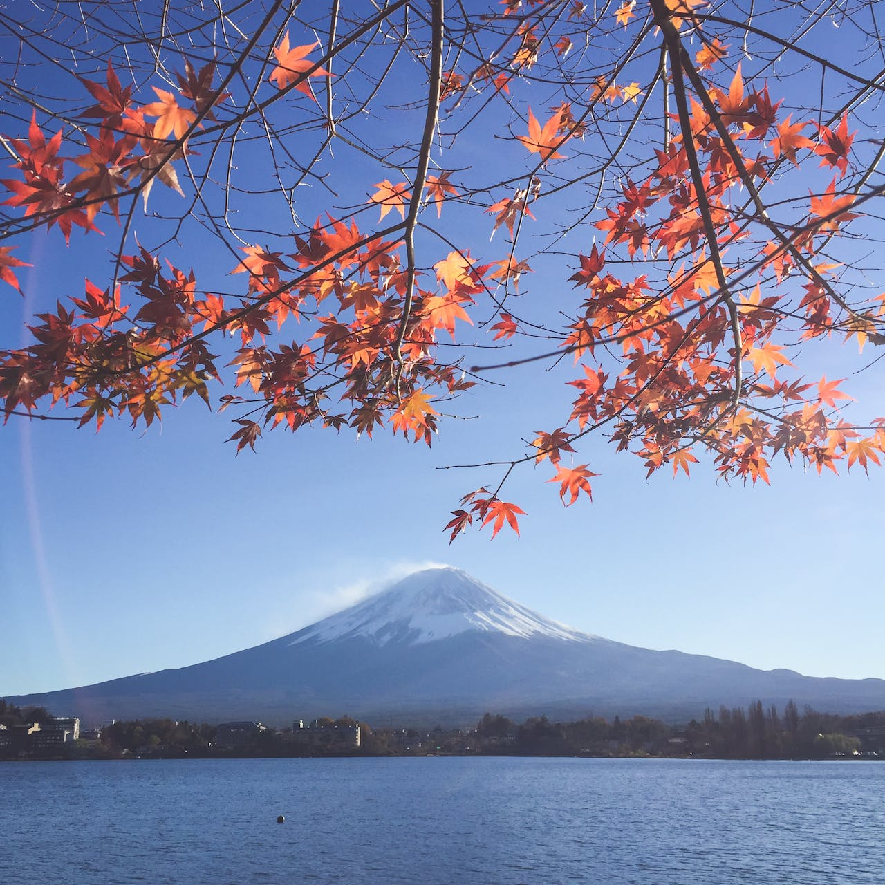
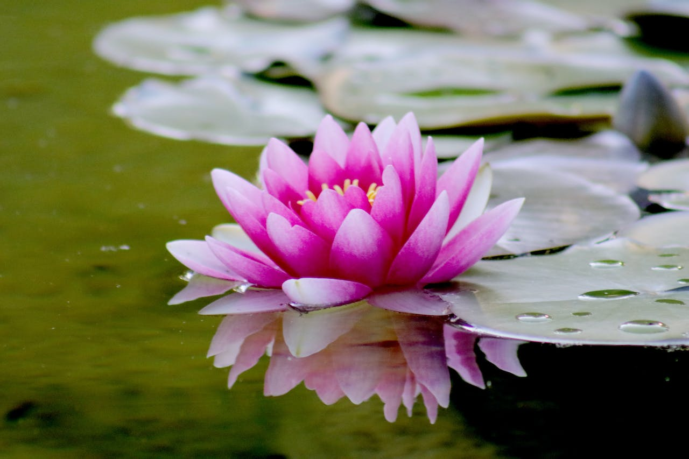
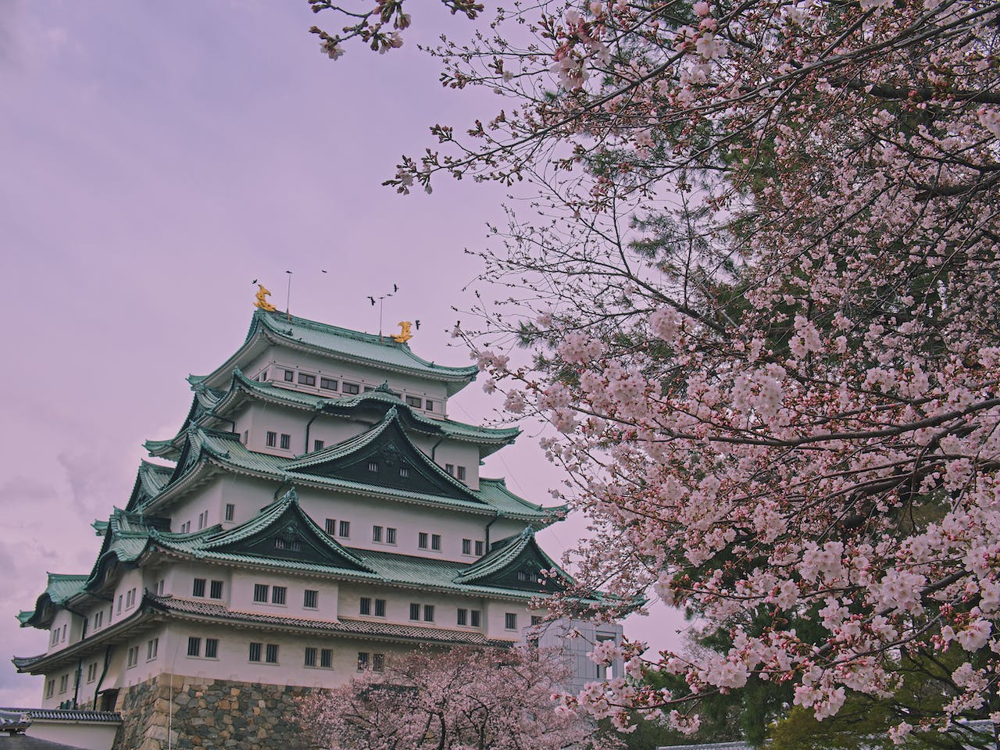
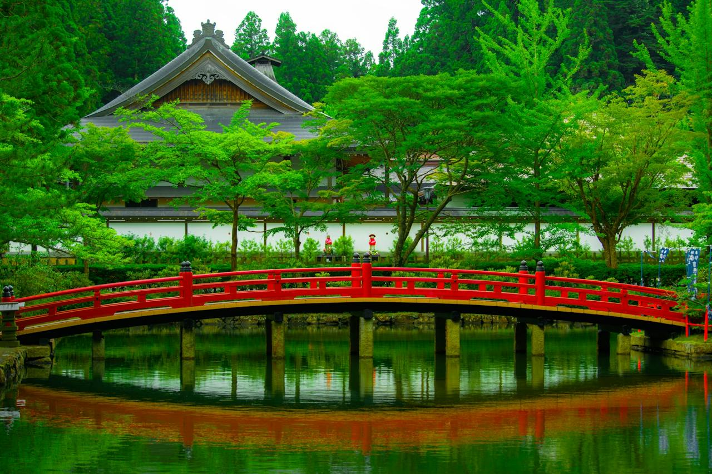
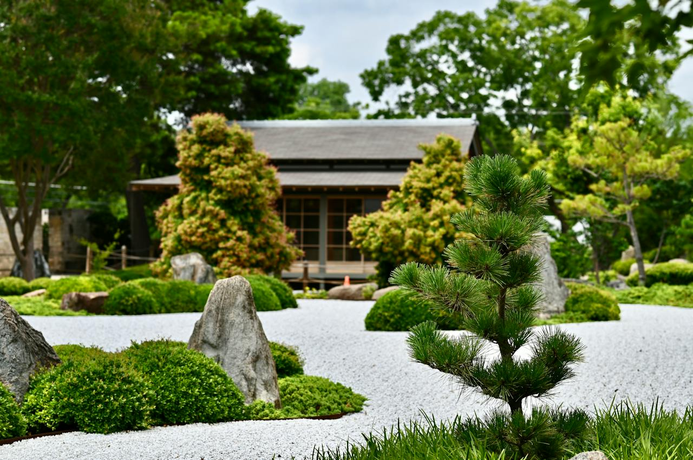
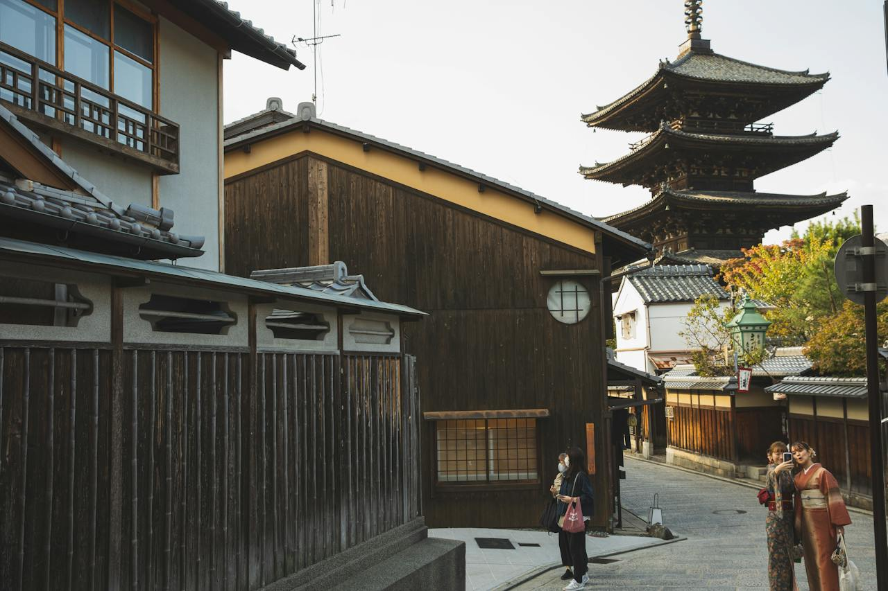

Japán kultúra - Természet ⛩️
Tudtad?
Japán területének nagyjából 73-75 százaléka hegyes vagy dombos terület. Az ország földrajzi jellemzői
nagymértékben befolyásolják ezt az arányt. Japán ma is geológiailag aktív terület, a földrengések szinte
"mindennaposak", és több vulkánikus eredetű hegységgel rendelkezik.
Ennek eredményeképpen az ország területének jelentős részét hegyvidékek, hegyek és dombok teszik ki, így
az ingatlanárak is rendkívül magasak. Az ilyen területek sok esetben nehezen lakhatók vagy művelhetők,
így az emberek főként az alacsonyabban fekvő, sík vidékeken, valamint a hegyek pereménél vagy lejtőin
telepedtek le.
A japán hegyvidék
Japán lenyűgöző természeti adottságai között találhatók olyan kincsek,
amelyek megkapóan szép és különleges élményt nyújtanak az odalátogatóknak. Az oszakai
cseresznyevirágzás, ismert japán nevén "sakura", káprázatos látványt nyújt
tavasszal. A város parkjai és utcái ekkor borulnak virágba, teremtve egy varázslatos rózsaszín ködöt,
ami egyedi és gyönyörű atmoszférát teremt az egész városban. Ez a néhány napos időszak igazi
túristacsalogató!
 A
Fuji-hegy, vagy Fujiyama, Japán legmagasabb hegye, ikonikus és szent hegyként
tisztelt a japán kultúrában. A tökéletesen kerek tetejű vulkán, csúcsán a panorámás kilátással,
lenyűgöző látványt nyújt mindazoknak, akik megmásszák vagy csak nézik a távolból. A japán hegyvidékek és
erdők gazdag és változatos tájakat kínálnak, amelyek jelentős részét képezik az ország területének. Ezek
a területek hozzájárulnak Japán lenyűgöző és változatos tájainak sokféleségéhez.
A
Fuji-hegy, vagy Fujiyama, Japán legmagasabb hegye, ikonikus és szent hegyként
tisztelt a japán kultúrában. A tökéletesen kerek tetejű vulkán, csúcsán a panorámás kilátással,
lenyűgöző látványt nyújt mindazoknak, akik megmásszák vagy csak nézik a távolból. A japán hegyvidékek és
erdők gazdag és változatos tájakat kínálnak, amelyek jelentős részét képezik az ország területének. Ezek
a területek hozzájárulnak Japán lenyűgöző és változatos tájainak sokféleségéhez.
Az ország jelentős részén hegyvidéki területek húzódnak, amelyek sok esetben vulkanikus eredetűek. Ezek a
hegyek gyakran gazdag növény- és állatvilággal rendelkeznek, és lenyűgöző panorámás kilátást nyújtanak.
A magas hegyek, mint például a japán Alpok (Japanese Alps) és a Kitadake-hegy (Mount Kitadake), különleges turisztikai célpontok, amelyek
népszerűek hegymászók, túrázók és természetkedvelők körében egyaránt. Az erdők Japánban szintén jelentős
szerepet töltenek be. Rengeteg erdős terület található az országban, amelyek gyakran összekapcsolódnak a
hegyvidékekkel. Ezek az erdők változatosak lehetnek, magukban foglalva őszi lombhullató erdőket,
örökzöldekkel borított területeket és bambuszligeteket is. Az erdők Japánban nem csupán a természeti
környezet részei, hanem kulturális jelentőséggel is bírnak, és sok esetben szent helyeknek számítanak a
japán vallásos és spirituális hagyományokban. Ezek az elvarázsolt hegyvidékek és erdős területek
összekapcsolódnak a japán kultúrával és életszemlélettel, kínálva lenyűgöző és inspiráló tapasztalatokat
azoknak, akik felfedezik és megtapasztalják ezen területek szépségeit és gazdagságát.
A hegyi sintó templomok szintén kiemelkedő
részei Japán természeti szépségének. Gyakran a hegyek és erdők mélyén találhatók, harmonikusan
illeszkedve a környező tájba és a természet szépségébe. Ezek a templomok, melyek a természettel való
harmóniát hangsúlyozzák, fontos szerepet töltenek be a japán kultúrában és
vallásosságban. Ezek az elemek együttesen mutatják be Japán varázslatos természeti
gazdagságát és kulturális örökségét, lenyűgözve és inspirálva azokat, akik részesei lehetnek ennek az
elképesztő országnak.
Galéria








(forrás: OpenAI ChatGPT 3.5)